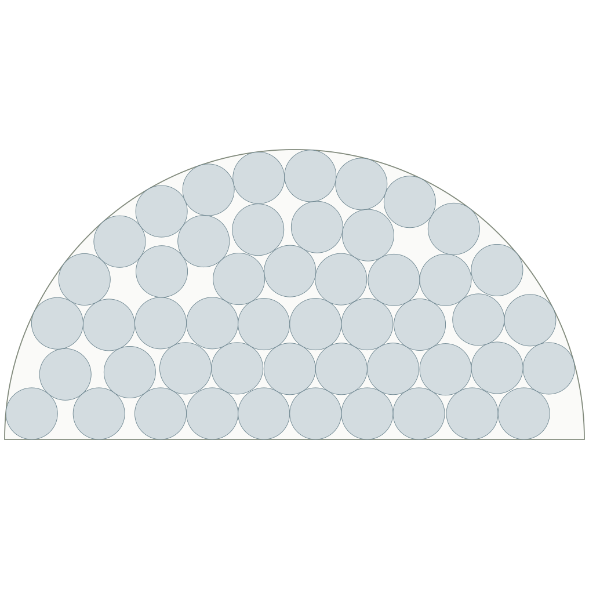

Packing problems
50 circles in a unit semicircle
Equal circles in a unit semicircle; larger radius is better.


This arrangement
0.089093786
Common radius · 8 significant figures
1.57e-08% larger radius than the radius calculated from the coordinates on Packomania (coordinate comparison) on 21 November 2026.
| Arrangement | Common radius |
|---|---|
| This arrangement | 0.089093786 |
| Packomania (coordinate comparison) | 0.089093786 |
Difference: 1.3947100e-11 larger radius.
The comparison uses the radius calculated from the public coordinates plus a guard of 1e−13. Very small difference over stored numerical comparison. Packomania lists overlapping pending submissions.